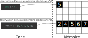

Collections
Introduction
Qu'est-ce qu'une collection?
Pour comprendre le terme, commençons par deux exemples de code qui posent problème.
1er cas
x
class Calculatrice{ public: int sum(int a, int b) { return a + b; }};int main(){ Calculatrice calculatrice; // Création d"une nouvelle calculatrice auto a = 5, b = 6, c= 7; // On souhaite faire la somme de ces 3 valeurs avec la calculatrice auto result = calculatrice.sum(a, b); // On est obligé de faire d'abord la somme de a et b result = calculatrice.sum(result, c); // Et ensuite de faire la somme du résultat précédent avec c std::cout << result << std::endl; // Affiche 18 return 0;}}
Dans cet exemple, on propose de réaliser une classe Calculatrice avec une méthode appelée sum qui fait la somme de 2 nombres entiers. Jusque là, tout va bien. Le problème se complique lorsque l'utilisateur souhaite additionner plus de deux nombres. Dans la fonction main, l'utilisateur souhaite additionner 3 entiers, il doit alors :
- appeler une première fois la méthode
sumavec la variableaetb - stocker le résultat intermédiaire dans une variable appelé
result - additionner le résultat intermédiaire avec la variable
c
Il faut imaginer maintenant si l'utilisateur veut additionner une cinquantaine d'entiers... Il doit appeler la même méthode quasiment autant de fois qu'il y a de nombres à additionner, ce qui n'est pas vraiment pratique et en informatique en aime quand tout est pratique.
2ème cas
On pourrait imaginer une entreprise de stockage qui souhaite stocker un grand nombre de téléphones, on ne connait pas le nombre à l'avance. On pourrait tenter le code suivant:
x
class Stockage{ private: // il faudrait déclarer autant de téléphones que l'entreprise de stockage a besoin // Le problème est qu'on ne sait pas combien il faut en déclarer à l'avance // Une solution naïve serait d'en déclarer une suffisamment grand nombre pour être sûr de pouvoir tout stocker Telephone _telephone0; Telephone _telephone1; Telephone _telephone2; int _nbMax; int _nbActuel; public: Stockage() { _nbMax = 3; _nbActuel = 0; } void ajouterTelephone(Telephone telephone) { if(_nbActuel == 0) { _telephone0 = telephone; _nbActuel++; } else if(_nbActuel == 1) { _telephone1 = telephone; _nbActuel++; } else if(_nbActuel == 2) { _telephone2 = telephone; _nbActuel++; } else { std::cout << "Erreur, le nombre de téléphones à stocker à atteint sa capacité maximal." } }};int main(){ Stockage stock; Telephone telephone0; stock.ajouterTelephone(telephone0); // Ajout d'autres téléphones}
Comment proposer une classe capable de contenir un attribut qui stocke un nombre N de téléphones avec N un nombre qui n'est pas connu à l'avance? Il faut bien imaginer ici l'enfer que de modifier la classe Stockage pour augmenter la capacité maximale du nombre de Telephone.
Utilisation de tableaux génériques
Quand on déclare une variable de type int par exemple, on réserve une case dans la mémoire. Ce qui serait intéressant c'est de déclarer une variable qui réserverait, non pas une, mais plusieurs cases mémoire afin de stocker plusieurs entiers. On accèderait à chacun de ces entiers via la même variable. Exemple de figure ci-dessous.

Le langage c++, comme bien d'autres langages proposent ce type de variable. Ce sont les tableaux. Un tableau est un type qui permet de réserver N cases mémoire et d'accéder à chacune des cases mémoire indépendamment l'une de l'autre. Voici un exemple d'initialisation d'un tableau de 5 entiers :
x
int main(){ int tab[5] = {2, 4, 5, 6, 7}; // Création d'un tableau de 5 entiers et initialisation des 5 valeurs int tab2[5]; // Création d'un tableau de 5 entiers, chaque case a une valeur par défaut, en général c'est 0, mais ce n'est pas tout le temps le cas}
On peut voir que la syntaxe peut être étrange puisque la création d'un tableau se fait de la manière suivante : TYPE NOM_VARIABLE[N] avec N le nombre de cases mémoires à réserver et qui vont contenir chacune une valeur de type TYPE, exemple de type int. Nous avons donc une variable tab qui contient une suite d'entiers. On peut si on le souhaite initialiser les valeurs du tableau dès la déclaration en insérant les valeurs entre {} après le "=".

Et comment on accède aux valeurs dans les cases mémoire? J'ai fait un dessin dessous.
Voici la réponse en code 😀 :
x
int main(){ int tab[10]; // Création d'un tableau de 10 entiers tab[0] = 1; // On affecte la valeur 1 au 1er élément tab[4] = 3; // On affecte la valeur 3 au 5ème élément}
Accéder à un élément i d'un tableau de N éléments se fait de la manière suivante : NOM_VARIABLE[i]. i est l'indice de l'élément à accéder. Attention tout de même! L'indice doit être compris entre 0, le premier élément, et N-1, le dernier élément. Alors oui c'est déroutant au début, si l'on a jamais manipulé, mais en programmation, on verra très souvent des indices qui commencent par 0. C'est le cas ici pour les tableaux.
x
int main(){ int tab[5] {1, 2, 3, 4, 5} // Création d'un tableau de 5 entiers tab[0] = 3; // On remplace la valeur du 1er élément qui est 1 par la valeur 3 auto value = tab[4]; // On copie le dernier élément du tableau dans la variable value return 0;}
J'insiste ici que l'indice pour accéder au premier élément d'un tableau est 0 et que l'indice pour accéder au dernier élement est N-1, avec N le nombre d'éléments total
Ok, je pense que je saisis, et si je veux faire une opération pour chacun des éléments du tableau, comment on fait? Je dois écrire à la main l'accès à chaque élément?
Heureusement non. Il existe les boucles pour se faciliter la vie, notamment la boucle for qui permet d'incrémenter un indice et accéder à chacun des éléments du tableau. Voici un exemple:
x
int main(){ const int N = 10; // Utilisation d'une constante pour éviter d'écrire la taille du tableau en brut partout int tab[N]; // Création d'un tableau de 10 entiers // Initialisation de chaque élément du tableau for(int i = 0; i < N; i++) { tab[i] = i; } // Mise à la puissance de chaque entier du tableau for(int i = 0; i < N; i++) { tab[i] *= tab[i]; } // Affichage des éléments du tableau for(int i = 0; i < N; i++) { std::cout << tab[i] << std::endl; }}En utilisant les boucles, on peut facilement accéder à un ensemble ou un sous-ensemble des éléments d'un tableau pour effectuer des opérations. La première boucle permet par exemple d'initialiser toutes les valeurs automatiquement. La seconde boucle permet de mettre à la puissance 2 chacune des valeurs du tableau. La troisième boucle permet d'afficher chacune des valeurs. Bien entendu, on aurait pu faire l'initialisation, la mise à la puissance et l'affichage dans une seule boucle, et ce serait tout à fait logique, mais ici ce n'est qu'à titre d'exemple.
On remarque qu'une variable constante appelée N est utilisée pour stocker le nombre total d'éléments du tableau tab. Cette constante est réutilisée dans les boucles pour faire varier l'indice i entre 0 et N-1. En programmation, on évite le plus possible de mettre des nombres en dur dans le code afin de rendre le code le plus flexible possible. Ce que je veux dire par flexible, c'est que si jamais on veut changer le nombre total d'éléments du tableau tab en passant par exemple de 10 à 5 élements, il suffit de changer la valeur affectée à la constante N. Le code compilera toujours que ce soit pour l'initialisation du tableau ou pour les parcours de ses éléments via les boucles for. On s'assure également que l'indice ne dépasse pas la taille du tableau, surtout lorsqu'on réduit la taille du tableau.
Je me demandais comment on passe un tableau à une fonction, parce qu'une variable de type int, çà va, mais un tableau...
Comme toujours, voici d'abord un exemple:
x
void func(int tab[], int size){ // operations sur tab}int main(){ const int N = 5; int tab[N]; func(tab, N); const int N2 = 100; int tab2[N2]; func(tab2, N2); return 0;}
Le passage d'un tableau à une fonction demande deux paramètres. Le premier est le tableau, ce qui va de soit, mais analysons la syntaxe. On écrit de la façon suivante : TYPE NOM_VARIABLE[] sans écrire la taille entre les crochets. L'idée, c'est que la fonction doit pouvoir traiter avec un tableau de n'importe quelle taille. C'est tout à fait possible de mettre un nombre entre crochet, mais il ne sert à rien, le compilateur va tout bonnement l'ignorer. Les crochets "vides" sont donc là seulement pour indiquer que c'est un tableau d'une certaine taille. Le second paramètre indique la taille du tableau, puisque le premier paramètre ne nous permet pas de le déduire.
Maintenant, l'appel de la fonction. Pour envoyer un tableau en paramètre de la fonction, il suffit d'envoyer le nom de la variable contenant le tableau. On fait par exemple func(tab, N); où tab est une variable contenant N éléments (fixé à 5 dans le code). Même si c'est tentant, on n'écrit pas de [] à la suite de la variable, c'est inutile puisqu'on ne déclare pas un type comme on le fait à la déclaration de tab, tab2 ou encore le paramètre tab de la fonction func.
Bon une fois dit tout çà, çà reste quand même embêtant de devoir gérer le tableau dans une variable et sa taille dans une autre variable. C'est d'autant plus embêtant que l'on doit aussi avoir un paramètre pour le tableau et un paramètre pour sa taille dans le cas d'une fonction qui prend un tableau en entrée. C'est le genre de chose qui peut créer des bugs par ci par là dans le bug et qui peut faire rager lorsque l'on essaye de comprendre ce qui ne va pas... En effet, qu'est-ce qui nous garantit qu' :
- on ne va pas parcourir un tableau avec la mauvaise taille ?
- on ne va pas se tromper dans le passage de la taille du tableau à une fonction?
Et bien rien nous le garantit... Ce que l'on vient de voir jusqu'à maintenant, c'est du code style langage C qui est bas niveau, mais heureusement le C++ apporte des concepts beaucoup plus modernes et haut niveau. Il existe quelque chose de plus sûr et facile à utiliser, c'est la classe vector.
Les tableaux dynamiques
La classe vector a été introduite dans les normes C++11, cette classe permet de gérer un tableau générique avec une taille qui peut être définie à la déclaration. L'utilisation de cette classe ne va pas être bien plus compliqué que ce que l'on a vu juste avant dans la section précédente, mais elle propose plus de chose et va nous simplifier la vie. Commençons par l'initialisation.
x
// Ne pas oublier d'inclure la librairieint main(){ // Initialisation d'un tableau de 3 entiers std::vector<int> tab(3); // Initialisation des valeurs du tableau tab[0] = 5; tab[1] = 3; tab[2] = 1; // initialisation d'un tableau de 3 entiers et de ses valeurs std::vector<int> tab2 = {5, 3, 1};}
Petite nouveauté sur la syntaxe ici qui n'a rien à voir avec la déclaration du tableau générique. On a d'abord le type de la variable, soit le type vector. Ensuite il y a des <> avec à l'intérieur le type du tableau générique interne à la classe vector. Par exemple vector<int> va gérer un tableau générique de type int[].
La taille initiale du vector peut être définie à la déclaration en envoyant la taille en tant que paramètre, comme std::vector<int>(5); qui définie un tableau de 5 entiers. Les valeurs sont initialisées par défaut, ce qui est 0 en général mais qui peut aussi être des valeurs sans aucun sens. On peut aussi définir la taille du tableau directement en lui affectant des valeurs comme ceci : vector<int> = {1, 2, 3}; où le tableau va contenir 3 éléments ayant les valeurs 1, 2 et 3.
Je ne comprend pas pourquoi on met des <> après le nom vector? Pourquoi on ne met pas le type entre ()?
La classe vector n'est pas une classe comme on pourrait le croire, mais plutôt un template de classe. Aye! On vient d'introduire un terme qui ne devait pas être traité tout de suite... Bon je ne vais pas faire le coup du "on verra plus tard", donc je vais juste en dire quelques mots. Si tu es intéressé, alors déplie la partie suivante. Ce n'est pas nécessaire de comprendre tout de suite dans tous les cas.
En savoir plus sur les templates
Une classe template est une sorte de classe incomplète qui une fois complétée devient une classe comme on connait. Alors çà veut dire quoi une classe incomplète? Et bien voici un exemple:
x
template<typename T> // T est le type incomplet, c'est à dire que l'on ne connait pas encore le typeclass Additionneur{ public: T add(T left, T right) // on sait que cette méthode va additionner deux variables, mais on ne sait pas si ce sont des entiers, des chaines de caractères, des flottants, ...
{ return left + right; }};int main(){ Additionneur<int> additionneurEntiers; // Remplace tous les T par int Additionneur<float> additionneurFlottants; // Remplace tous les T par float int resultatEntier = additionneurEntiers.add(5, 3); // resultat sous forme d'entier float resultatFlottant = additionneurFlottants.add(5.0f, 3.0f); // resultat sous forme flottant return 0;}
Dans l'exemple ci-dessus, on a créé une classe template dont le type T n'est pas encore défini, c'est à dire qu'on ne sait pas encore si T est un type float, int, ... Dans cette même classe, il y a une méthode add qui prend deux paramètres de type T, et retourne une valeur de type T. Le type T est défini seulement à la l'initialisation d'un nouvel objet Additionneur. Par exemple, un objet Additionneur<int> et Additionneur<float> ont été créé dans la fonction main, ce qui a pour effet de créer une nouvelle classe en remplaçant T par le type correspondant, soit une classe créée en remplaçant les T par le type int et une seconde en remplaçant le type T par le type float. Un code équivalent serait:
x
class AdditionneurEntiers{ public: int add(int left, int right) { return left + right; }};class AdditionneurFlottants{ public: float add(float left, float right) { return left + right; }};int main(){ AdditionneurEntiers additionneurEntiers; AdditionneurFlottants additionneurFlottants; int resultatEntier = additionneurEntiers.add(5, 3); float resultatFlottant = additionneurFlottants.add(5.0f, 3.0f); return 0;}Pratique n'est-ce pas? Pas besoin de créer une classe pour chaque type, on a juste besoin d'en créer une assez générique pour ensuite la spécialiser lors de la création d'un objet en indiquant le type à utiliser.
Dans le cas de la classe vector, nous avons un champs à remplacer et il correspond au type du tableau générique à créer. Exemple vector<float> va gérer un tableau générique contenant des float.
Alors pourquoi pas donner le type entre (), plutôt qu'entre <>? Et bien, je pense que c'est une règle pour clairement séparer les paramètres liés à l'instanciation d'un template et les paramètres de création d'un objet. C'st à dire que ce qu'il y a à l'intérieur des <> sont destinés à compléter la classe template pour créer une classe spécifique comme on a vu ce que pourrait être le template Additionneur avec par exemple Additionneur<int>() qui donnerait en quelque sorte la classe AdditionneurEntiers. Ce qu'il y a entre () est dont dédié à des paramètres de constructeur, une fois la classe instanciée comme la classe vector où la taille doit être passée au constructeur.
Je n'en dis pas plus ici, je pense que c'est suffisamment d'information pour comprendre les dessous de la classe template vector.
On a vu l'initialisation d'un vector, on va voir maintenant comment on parcourt ces vector, et surprise! C'est quasiment la même chose que ce que l'on a vu précédemment.
x
int main(){ std::vector<int> tab(10); // Création d'un tableau de 10 entiers // Initialisation de chaque élément du tableau for(int i = 0; i < tab.size(); i++) { tab[i] = i; } // Mise à la puissance de chaque entier du tableau for(int i = 0; i < tab.size(); i++) { tab[i] *= tab[i]; } // Affichage des éléments du tableau for(int i = 0; i < tab.size(); i++) { std::cout << tab[i] << std::endl; }}
La petite nouveauté ici, et pas des moindres, c'est que la taille est désormais encapsulée dans la classe vector et un accesseur est exposé pour obtenir la taille du tableau, qui est tab.size(). On a plus besoin de s'embêter alors à se trimballer à côté une taille dans une variable. C'est ce qui facilite aussi les paramètres des fonctions utilisant un vector.
x
void func(std::vector<int> tab){ std::cout << tab.size() << std::endl;}int main(){ std::vector<int> tab(5); func(tab); // Affiche 5 std::vector<int> tab2(100); func(tab2); // Affiche 100 return 0;}
On est presque arrivé! Il reste un truc que je veux aborder avec les vector, c'est le côté "dynamique". Le contraire de "dynamique", c'est le terme "statique" et c'est le cas du tableau générique que l'on a présenté au début de cette fiche. Revoici un exemple : float tab[5];. Le terme statique provient du fait que le tableau tab ne peut pas changer de taille durant l'exécution, il restera fixé à 5 éléments. On ne peut pas non pas déclarer un tableau statique avec un nombre défini à l'éxécution, c'est à dire une variable qui n'est pas constante dès le départ.
x
int main(){ float tab[4]; // Autorisé, 4 est par nature constant const int N = 4; float tab2[N]; // Autorisé, N est une variable constante int n = 4; float tab3[n]; // Erreur de compilation, n est une variable non constante return 0;}
Les tableaux dits dynamiques comme les vector, sont des tableaux qui au contraire peuvent changer de taille tout au long de l'exécution, et qui peuvent être initialisés soit avec une taille à 0 soit avec une taille définie dans une variable non constante. Ce qui peut être particulièrement utile lorsqu'on ne sait pas le nombre d'élements que l'on va stocker à l'avance comme par exemple le nombre de Telephone pour l'entreprise de stockage.
x
int main(){ std::vector<float> tab(4); // Autorisé const int N = 4; std::vector<float> tab2(N); // Autorisé int n = 4; std::vector<float> tab3(n); // Autorisé std::vector<float> tab4; // Autorisé, c'est un tableau de taille 0 return 0;}Si on peut créer un tableau de taille 0, comment on lui ajoute des éléments alors?
C'est justement là où je souhaite en venir, c'est que même si une taille est fixée au départ, on peut tout de même changer la taille du tableau plus tard. Pour çà, il suffit d'utiliser par exemple la méhode push_back qui va ajouter un nouvel élément à la fin du tableau (figure ci-dessous).
x
int main(){ std::vector<float> tab; // Tableau de taille 0 std::cout << tab.size() << std::endl; // Affiche 0 tab.push_back(3.0f); // Ajout d'un élément au tableau std::cout << tab.size() << std::endl; // Affiche 1 std::cout << tab[0] << std::endl; // Affiche 3.0 std::vector<float> tab2(4); // Autorisé std::cout << tab2.size() << std::endl; // Affiche 4 tab2.push_back(2.0f); // Ajout d'un élément au tableau std::cout << tab2.size() << std::endl; // Affiche 5 std::cout << tab2[4] << std::endl; // Affiche 2.0 return 0;}
Je pense que ces informations sont suffisantes pour déjà commencer à manipuler des vector. Il ne faut pas hésiter à visiter la page de description de la classe pour obtenir des informations supplémentaires : Documentation vector.
Eurêka, la solution!
Maintenant que l'on a tous les éléments en main, saurais-tu comment résoudre les deux cas problèmes en introduction de cette fiche? Je te laisse y réfléchir. La solution est dans la partie cachée.
Solution
Solution pour la calculatrice:
x
class Calculatrice{ public: int sum(vector<int> tab) { auto total = 0; for(auto i = 0; i < tab.size(); i++) { total += tab[i]; } return total; }};int main(){ const int N = 5; vector<int> values; values.push_back(4); values.push_back(9); values.push_back(1); values.push_back(40); values.push_back(58); Calculatrice calc; auto result = calc.sum(values); std::cout << result << std::endl; return 0;}Solution pour l'entreprise de stockage:
x
class Stockage{ private: std::vector<Telephone> _telephones; public: void ajouterTelephone(Telephone telephone) { _telephones.push_back(telephone); }};int main(){ Stockage stock; Telephone telephone0; stock.ajouterTelephone(telephone0); // l'ajout d'autres téléphones ne pose pas de problème de limite ici}Tableaux statiques vs tableaux dynamiques
Comment peut-on savoir si l'on doit utiliser un tableau statique (int tab[10]) ou dynamique std::vector
Et bien tout cela dépend du problème auquel on est confronté. De manière générale, on va très souvent utiliser des tableaux dynamiques, même si leur taille ne change pas ou peu durant l'exécution. La différence réside principalement dans l'optimisation du programme. Le plus couteux, c'est le changement de taille du vector, puisqu'on fait la demande de nouvelles cases mémoire et çà c'est pas le top, mais il faut savoir que le vector a quelques optimisations internes qui permettent de réduire l'impact de ces opérations. Ce n'est pas le cas pour les tableaux statiques puisqu'ils ne permettent pas de changer la taille. Une autre grosse différence entre un tableau dynamique et statique, c'est que le premier va allouer de la mémoire dans la mémoire appelée "tas" (heap en anglais) et le tableau statique va allouer de la mémoire dans la "pile d'exécution" (stack en anglais), ce qui peut aussi amener à des optimisations. Si tu es vraiment intéressé par les différences techniques, je te conseille le lien suivant : https://www.modernescpp.com/index.php/c-core-guidelines-std-array-and-std-vector-are-your-friends

Résumé
Revenons sur la question initiale de cette fiche : Qu'est-ce qu'une collection? On vient de répondre en partie par des exemples avec des tableaux statiques et dynamiques, puisqu'en effet les tableaux sont des collections. De manière plus générale, une collection est une structure de données permettant de ranger d'une certaine façon un grand nombre de données. On vient de la voir avec les tableaux, où les données sont mises côte à côté dans la mémoire, mais ce n'est pas le cas pour d'autres collections qui propose de structurer des données différemment comme par exemples les listes, les dictionnaires, les queues, etc... On verra ces collections dans d'autres fiches.
Dans cette fiche nous avons vu:
- quel est l'intérêt d'une collection, notamment des tableaux pour certaines problématiques
- comment fonctionne les tableaux statiques (
int tab[5]) et dynamiques (vector)tab - la différence entre un tableau statique et dynamique
Voici un résumé de l'utilisation de la classe vector.
x
int sumElements(std::vector<int> tab){ int total = 0; for(int i = 0; i < tab.size(); i++) { total += tab[i]; } return total}void printElements(std::vector<int> tab){ for(int i = 0; i < tab.size(); i++) { std::cout << tab[i] << std::endl; }}int main(){ std::vector<int> tab; // Création d'un vector de taille 0 // Ajout de 10 éléments au vector for(int i = 0; i < 10; i++) { tab.push_back(i); } std::cout << sumElements(tab) << std::endl; // Affiche le résultat de 10 + 9 + 8 + ... std::cout << printElements(tab) << std::endl; // Affiche 0 1 2 3 4 ... std::vector<float> tab2(6); // Initialise un vector de taille 6 std::vector<std::string> tab3 = {"hello", "je", "m'appelle", "euh", "c'est", "quoi", "mon", "nom", "déjà", "?"}; // Initialise un vector de 10 chaines de caractères }